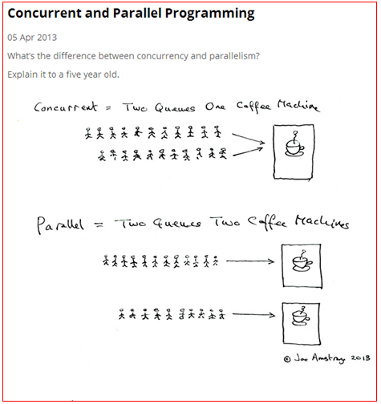

本博客系列是学习并发编程过程中的记录总结。由于文章比较多，写的时间也比较散，所以我整理了个目录贴（传送门），方便查阅。
多线程是Java编程中一块非常重要的内容，其中涉及到很多概念。这些概念我们平时经常挂在嘴上，但是真的要让你介绍下这些概念，你可能还真的讲不清楚。这篇博客就总结下多线程编程中经常用到的概念，理解这些概念能帮助我们更好地掌握多线程编程。
进程和线程是最常提到的概念了。在linux中，线程与进程最大的区别就是是否共享同一块地址空间，而且共享同一块地址空间的那一组线程将显现相同的PID号。下面介绍下两者的概念：
谈到线程和进程，又势必会涉及到线程号和进程号的概念。下面列举了各个ID的概念。
下面贴上一张图来解释下这两个概念：

上图中的咖啡就可以看成是CPU，上面的只有一个咖啡机，相当于只有一个CPU。想喝咖啡的人只有等前面的人制作完咖啡才能制作自己的开发，也就是同一时间只能有一个人在制作咖啡，这是一种并发模式。下面的图中有两个咖啡机，相当于有两个CPU，同一时刻可以有两个人同时制作咖啡，是一种并行模式。
我们发现并行编程中，很重要的一个特点是系统具有多核CPU。要是系统是单核的，也就谈不上什么并行编程了。
这个概念可能是在多线程编程中提及最多的一个概念了。在面试过程中，我试着问过几个面试者，但是几乎没人能将这个概念解释的很好的。
关于这个概念，我觉得好多人都有一个误区，包括我自己一开始也是这样的。我一开始认为线程安全讲的是某个共享变量线程安全，其实我们所说的线程安全是指某段代码或者是某个方法是线程安全的。线程安全的准确定义应该是这样的：
如果线程的随机调度顺序不影响某段代码的最后执行结果，那么我们认为这段代码是线程安全的。
为了保证代码的线程安全，Java中推出了很多好用的工具类或者关键字，比如volatile、synchronized、ThreadLocal、锁、并发集合、线程池和CAS机制等。这些工具并不是在每个场景下都能满足我们多线程编程的需求，并不是在每个场景下都有很高的效率，需要我们程序员根据具体的场景来选择最适合的技术，这也许就是我们程序员存在的价值所在。（我一直觉得如果有一个技术能很好的解决大多数场景下的问题，那么这个领域肯定是可以做成机器自动化的。那么对于这个领域就不太需要有多少人参与了。）
线程1占用了锁A，等待锁B，线程2占用了锁B，等待锁A，这种情况下就造成了死锁。在死锁状态下，相关的代码将不能再提供服务。
private void deadLock() {
Thread t1 = new Thread(new Runnable() {
@Override
public void run() {
synchronized (lock1) {
try {
Thread.currentThread().sleep(2000);
} catch (InterruptedException e) {
e.printStackTrace();
}
synchronized (lock2) {
System.out.println("1");
}
}
}
});
Thread t2 = new Thread(new Runnable() {
@Override
public void run() {
synchronized (lock2) {
synchronized (lock1) {
System.out.println("2");
}
}
}
});
t1.start();
t2.start();
}这段代码只是演示死锁的场景，在现实中你可能不会写出这样的代码。但是，在一些更为复杂的场景中，你可能会遇到这样的问题，比如t1拿到锁之后，因为一些异常情况没有释放锁（死循环）。又或者是t1拿到一个数据库锁，释放锁的时候抛出了异常，没释放掉。
如果你怀疑代码中有线程出现了死锁，你可以dump线程，然后查看线程状态有没有Blocked的线程（java.lang.Thread.State: BLOCKED）
"Thread-2" prio=5 tid=7fc0458d1000 nid=0x116c1c000 waiting for monitor entry [116c1b000]
java.lang.Thread.State: BLOCKED (on object monitor)
at com.ifeve.book.forkjoin.DeadLockDemo$2.run(DeadLockDemo.java:42)
- waiting to lock <7fb2f3ec0> (a java.lang.String)
- locked <7fb2f3ef8> (a java.lang.String)
at java.lang.Thread.run(Thread.java:695)
"Thread-1" prio=5 tid=7fc0430f6800 nid=0x116b19000 waiting for monitor entry [116b18000]
java.lang.Thread.State: BLOCKED (on object monitor)
at com.ifeve.book.forkjoin.DeadLockDemo$1.run(DeadLockDemo.java:31)
- waiting to lock <7fb2f3ef8> (a java.lang.String)
- locked <7fb2f3ec0> (a java.lang.String)
at java.lang.Thread.run(Thread.java:695)
避免死锁的几个方式：
饥饿是指某一个或者多个线程因为种种原因无法获得所需要的资源，导致一直无法执行。比如它的线程优先级可能太低，而高优先级的线程不断抢占它需要的资源，导致低优先级线程无法工作。
在自然界中，母鸟给雏鸟喂食时很容易出现这种情况：由于雏鸟很多，食物有限，雏鸟之间的食物竞争可能非常厉害，经常抢不到食物的雏鸟有可能会被饿死。线程的饥饿非常类似这种情况。
此外，某一个线程一直占着关键资源不放，导致其他需要这个资源的线程无法正常执行，这种情况也是饥饿的一种。与死锁相比，饥饿还是有可能在未来一段时间内解决的（比如，高优先级的线程已经完成任务，不再疯狂执行）。
活锁是一种非常有趣的情况。不知道大家是否遇到过这么一种场景，当你要坐电梯下楼时，电梯到了，门开了，这时你正准备出去。但很不巧的是，门外一个人挡着你的去路，他想进来。于是，你很礼貌地靠左走，避让对方。同时，对方也非常礼貌地靠右走，希望避让你。结果，你们俩就又撞上了。于是乎，你们都意识到了问题，希望尽快避让对方，你立即向右边走，同时，他立即向左边走。结果，又撞上了！不过介于人类的智能，我相信这个动作重复两三次后，你应该可以顺利解决这个问题。因为这个时候，大家都会本能地对视，进行交流，保证这种情况不再发生。
但如果这种情况发生在两个线程之间可能就不会那么幸运了。如果线程的智力不够，且都秉承着“谦让”的原则，主动将资源释放给他人使用，那么就会导致资源不断地在两个线程间跳动，而没有一个线程可以同时拿到所有资源正常执行。这种情况就是活锁。
这边讨论的同步和异步指的是同步方法和异步方法。
同步方法是指调用这个方法后，调用方必须等到这个方法执行完成之后才能继续往下执行。
异步方法是指调用这个方法后会立马返回，调用方能立马往下继续执行。被调用的异步方法其实是由另外的线程进行执行的，如果这个异步方法有返回值的话可以通过某种通知的方式告知调用方。
实现异步方法的方式：
涉及读写共享资源的代码片段叫“临界区”。
比如下面代码中,1处和2处就是一个代码临界区。
private static class BankAccount{
String accountName;
double balance;
public BankAccount(String accountName,double balance){
this.accountName = accountName;
this.balance = balance;
}
public synchronized double deposit(double amount){
balance = balance + amount; //1
return balance;
}
public synchronized double withdraw(double amount){
balance = balance - amount; //2
return balance;
}
}线程在CPU上运行之前需要CPU给这个线程分配时间片，当时间片运行完之后这个线程就会让出CPU资源给其他的线程运行。但是线程在将CPU资源让出之前会保存当前的任务状态以便下次获得CPU资源之后可以继续往下执行。所以线程从保存当前执行状态到再加载的过程称为一次上下文切换。
减少上下文切换的措施
使用并发编程的目的是让程序运行的更快（更大限度的使用CPU资源，让程序运行更快），但是在进行并发编程的过程也会遇到一些挑战。
PS：多线程并发编程可以让我们最大限度的使用系统的CPU资源，以达到让程序运行更快的目的（不是所有情况下多线程都更快）。但是一个硬币具有两面性，引入多线程编程会给我们带来其他的问题，比如说线程的上下文切换问题、共享变量的线程安全问题、线程间通信问题、线程死锁问题和硬件资源对多线程的影响等问题。其实研究多线程并发编程就是在研究这对矛盾体，怎么在享受多线程并发编程给我们带来便利的同时又能避开多线程带来的坑。JDK中给我们提供很多多线程相关的类